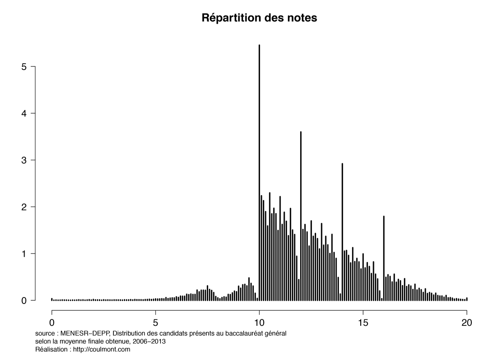
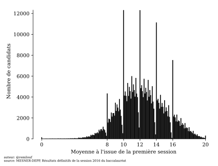
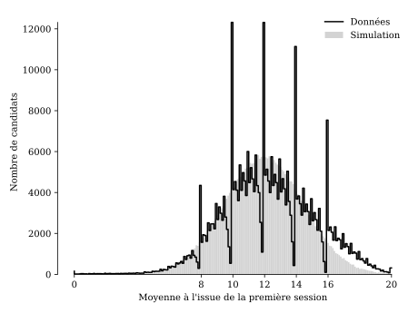
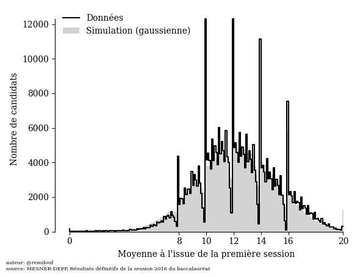
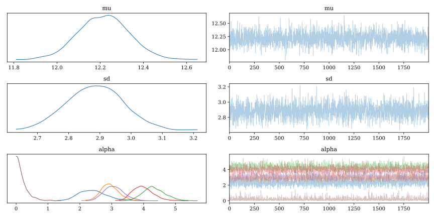
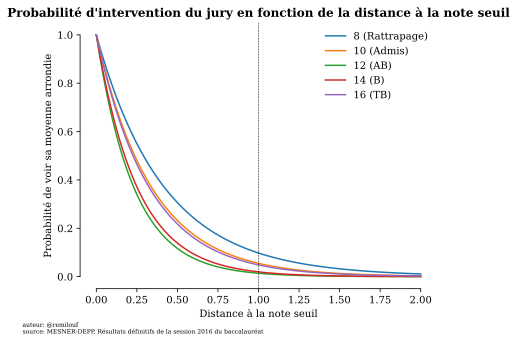

Les notes du bac II
À l'origine de cette note, un post de blog de Baptiste Coulmont sur l'évolution des notes du bac dans le temps. Plus particulièrement, cette courbe représentant la distribution de la moyennes des notes obtenues au baccalauréat entre 2006 et 2013:

Cette courbe est très éloignée de la gaussienne attendue. Le but de cet exercice de modélisation est de montrer qu'il est néanmoins possible de reproduire cette courbe en supposant que la distribution des moyennes avant l'intervention du jury est normale.
"""Load grade distribution from disk""" import arviz as az import matplotlib.pyplot as plt import numpy as np import pandas as pd import pymc3 as pm import scipy.stats as stats import scipy.special as special plt.rcParams['font.family'] = 'serif' notes_df = pd.read_csv('./data/notes_baccalaureat_general_2016.csv', names=['moyenne', 'num_candidats'])[1:] notes_df['num_candidats'] = pd.to_numeric(notes_df['num_candidats']) notes_df['moyenne'] = pd.to_numeric(notes_df['moyenne']) num_candidats = notes_df['num_candidats'].values moyenne = notes_df['moyenne'].values
Nous n'avons malheureusement à notre disposition que les données concernant la première session 2016 (si vous avez accès à plus de données, je vous serais reconnaissant de bien vouloir me contacter) :
fig, ax = plt.subplots() ax.bar(x=moyenne, height=num_candidats, width=0.1, color='black') ax.set_xlabel("Moyenne à l'issue de la première session") ax.set_ylabel("Nombre de candidats") # Remove axis lines. ax.spines['top'].set_visible(False) ax.spines['right'].set_visible(False) # Set spine extent. ax.spines['bottom'].set_bounds(0, 20) ax.spines['left'].set_bounds(0, max(num_candidats)) # Set x ticks x_ticks = [0, 8, 10, 12, 14, 16, 20] ax.xaxis.set_ticks(x_ticks) plt.figtext( 0, -.02, 'auteur: @remilouf\nsource: MESNER-DEPP, Résultats définitifs de la session 2016 du baccalauréat', fontsize=6 ) fname="images/notes-bac-distribution-2016.svg" plt.savefig(fname, bbox_inches='tight') fname

Cette courbe-ci est aussi éloignée d'une simple loi normale, avec des pics autour des notes 8, 10, 12, 14, 16 qui correspondent respectivement à la note minimale pour aller au rattrapage, la note d'admission, les mentions AB, B et TB. Nous allons montrer ici que la courbe s'explique très bien en supposant que la distribution des moyennes est normale et en modélisant l'intervention du jury.
Modèle
Des notes à l'histogramme
On note \(\theta_n \in \left[0, 20\right]\) la moyenne brute du candidat \(n\), c'est-à-dire avant l'intervention du jury :
\begin{equation*} \theta_n \sim \operatorname{Normal}(\mu, \sigma) \end{equation*}
\(\mu\) est la "vraie" moyenne des notes du bac, \(\sigma\) sa "vraie" déviation standard. Une inspection rapide du graphe nous permet de définir les priors vaguement informatifs suivants:
\begin{align*} \displaystyle \mu &\sim \operatorname{Normal}(12,2)\\ \sigma &\sim \max \left[0, \operatorname{Normal}(2.5, 2)\right] \end{align*}
Cependant nous ne disposons par des notes individuelles \(\left\{\theta_n\right\}_{n=1\dots N_{candidats}}\), mais du vecteur des \(N_i\) le nombre de candidats ayant obtenu la note \(i\). Pour obtenir ce vecteur les notes sont visiblement arrondies au dixième de point près : nous supposerons qu'une note entre \(0\) et \(0.5\) sera arrondie à 0, entre \(0.5\) et \(1.5\) à \(1\), etc.
Notons \(\mathbf{N} = \left(N_0, \dots, N_{201}\right)\) le vecteur qui contient le nombre \(N_0\) de notes arrondies à \(0\), … \(N_{201}\) le nombre de notes arrondies à 20. Nous supposons que ce vecteur est distribué selon une loi multinomiale, où la probabilité de tomber dans la \(i\) -ème catégorie est donnée par l'intégrale de la distribution des \(\theta\) entre \(0.1 * i -0.5\) et \(0.1*i + 0.5\):
\begin{align*} \mathbf{N} &\sim \operatorname{Multinomial}(\mathbf{p}, N_{candidats})\\ p_{i} &= \int_{0.1\,i-0.05}^{0.1\,i + 0.05} P(\theta_n=\theta|\mu,\sigma) \mathrm{d}\theta \end{align*}
Le modèle est bien moins compliqué que ça en a l'air. On peut l'utiliser pour simuler de fausses données avec le code suivant:
import numpy as np import scipy.stats as stats rng = np.random.default_rng() bins = [0] + [0.05 + 0.1 * i for i in range(200)] + [20] def simulate(num_candidats, moyenne=12, sd=2.5): probs = stats.norm(moyenne, sd).cdf(bins) probs = [b-a for a, b in zip(probs[:-1], probs[1:])] hist = rng.multinomial(num_candidats, probs) return hist
Et l'on obtient la courbe suivante :
num = simulate(np.sum(num_candidats), 12.2, 2.9) fig, ax = plt.subplots() ax.bar( x=moyenne, height=num, width=0.1, label="Simulation (gaussienne)", color="lightgray" ) ax.step( x=moyenne, y=num_candidats, label="Données", color='black' ) ax.set_xlabel("Moyenne à l'issue de la première session") ax.set_ylabel("Nombre de candidats") # Remove axis lines. ax.spines['top'].set_visible(False) ax.spines['right'].set_visible(False) # Set spine extent. ax.spines['bottom'].set_bounds(0, 20) ax.spines['left'].set_bounds(0, max(num_candidats)) # Set x ticks x_ticks = [0, 8, 10, 12, 14, 16, 20] ax.xaxis.set_ticks(x_ticks) plt.legend(frameon=False) plt.figtext( 0, -.02, 'auteur: @remilouf\nsource: MESNER-DEPP, Résultats définitifs de la session 2016 du baccalauréat', fontsize=6 ) fname = "./images/bac-premiere-normal_histogram.svg" plt.savefig(fname, bbox_inches="tight") fname

Cette simple gaussienne n'est pas une mauvaise approximation à la courbe de départ. Reste maintenant à comprendre d'où viennent les creux et les pics dans les données.
Intervention du jury
On observe un évident effet d'arrondi autour des notes:
- 8 qui détermine si l'élève est admis au rattrapage;
- 10 qui détermine si l'élève est admis;
- 12, 14, 16 qui déterminent les mentions AB, B, TB
On note \(\Omega = \left\{8, 10, 12, 14, 16\right\}\) l'ensemble des notes pour lesquelles on s'attend à observer un effet de seuil et \(\tilde{\theta}_n\) la note du candidat \(n\) après intervention du jury. On suppose que la probabilité que le jury intervienne, i.e. que \(\tilde{\theta}_n \in \Omega\) décroit de façon exponentielle en fonction de la distance entre \(\bar{\theta}_n\) et \(\omega_{f(n)}\) où \(f(n)\) est l'indice de la note seuil correspondante à la note de l'élève \(n\) dans \(\Omega\) :
\begin{align*} \mathbf{\alpha} &\sim \operatorname{Exponential}(5.)\\ P(\tilde{\theta}_{n} = \omega_{f(n)}) &= \exp \left(-\alpha_{f(n)} (\omega_{f(n)} - \bar{\theta}_{n})\right) \end{align*}
Comme précédemment avec le modèle gaussien il est possible de générer des données synthétiques à partir de ce modèle:
import numpy as np import scipy.stats as stats moyennes = notes_df.moyenne.values rng = np.random.default_rng() seuils = np.array([8, 10, 12, 14, 16, 1000]) bins = [0] + [0.05 + 0.1 * i for i in range(200)] + [20] def simulate_all(mu, sd, alpha): # Les notes sont distribuées selon une gaussienne puis arrondies et regroupées hist_probs = stats.norm(mu, sd).cdf(bins) hist_probs = np.array([b-a for a, b in zip(hist_probs[:-1], hist_probs[1:])]) hist = rng.multinomial(np.sum(num_candidats), hist_probs) # Le jury accorde le rattrapage, l'admission ou la mention idx = np.searchsorted(seuils, moyennes) delta = seuils[idx] - moyennes p_repechage = np.exp(- delta * alpha[idx]) repeches = rng.binomial(hist, p_repechage) hist -= repeches for i, seuil in enumerate(seuils): hist[moyennes == seuil] += np.sum(repeches[idx==i]) return hist
num = simulate_all(12.2, 2.9, 5. * np.ones(6)) fig, ax = plt.subplots() ax.bar( x=moyenne, height=num, width=0.1, label="Simulation (gaussienne)", color="lightgray" ) ax.step( x=moyenne, y=num_candidats, label="Données", color='black' ) ax.set_xlabel("Moyenne à l'issue de la première session") ax.set_ylabel("Nombre de candidats") # Remove axis lines. ax.spines['top'].set_visible(False) ax.spines['right'].set_visible(False) # Set spine extent. ax.spines['bottom'].set_bounds(0, 20) ax.spines['left'].set_bounds(0, max(num_candidats)) # Set x ticks x_ticks = [0, 8, 10, 12, 14, 16, 20] ax.xaxis.set_ticks(x_ticks) plt.legend(frameon=False) plt.figtext( 0, -.02, 'auteur: @remilouf\nsource: MESNER-DEPP, Résultats définitifs de la session 2016 du baccalauréat', fontsize=6 ) fname = "./images/bac-premiere-all_histogram.png" plt.savefig(fname, bbox_inches="tight") fname

Pas mal!
Inférence
Maintenant que nous avons un modèle capable de produire des données synthétiques proches des donnée observées nous pouvons passer à l'étape suivante: utiliser le modèle avec les données pour calculer la distribution postérieur des paramètres \(\mu\), \(\sigma\) et \(\mathbf{\alpha}\). À cause de la nature de l'intervention du jury il est compliqué d'écrire une fonction de vraissemblance pour ce modèle. Nous devons donc utiliser l'Approximate Bayesian Computation. Le modèle s'écrit avec PyMC:
with pm.Model() as model: mu = pm.Normal("mu", 12, 2) sd = pm.TruncatedNormal("sd", 2, 1, lower=0.1) alpha = pm.Exponential("alpha", 5.0, shape=(6,)) s = pm.Simulator( "s", simulate_all, params=(mu, sd, alpha), epsilon=1000, observed=num_candidats )
L'inférence se déroule sans problème avec \(\epsilon = 1000\) :
with model: trace = pm.sample_smc( kernel='ABC', chains=1, parallel=True, save_sim_data=True )
Regardons la trace et la distribution postérieure des différentes variables pour vérifier que tout s'est déroulé sans problème :
fig, ax = plt.subplots() az.plot_trace(trace[0]); fname="images/notes-bac-premiere-trace.svg" plt.tight_layout() plt.savefig(fname) fname

Résultats
Avant de se lancer dans des inteprétations vérifions que la distribution postérieure prédictive de notre modèle reproduit les données de façon satisfaisante. Chaque courbe bleue correspond à une simulation :
fig, ax = plt.subplots(figsize=(10,6)) ax.step(moyennes, notes_df.num_candidats, ls='--', color='grey', label='Données') for i in range(1000): ax.step(moyennes, trace[1]['s'][0][i], color='b', alpha=0.005) ax.step(moyennes, trace[1]['s'][0][i], color='b', alpha=0.1, label='Prédictions du modèle') ax.set_xlabel("Moyenne à l'issue de la première session") ax.set_ylabel("Nombre de candidats") # Remove axis lines. ax.spines['top'].set_visible(False) ax.spines['right'].set_visible(False) # Set spine extent. ax.spines['bottom'].set_bounds(0, 20) ax.spines['left'].set_bounds(0, 17500) # Set x ticks x_ticks = [0, 8, 10, 12, 14, 16, 20] ax.xaxis.set_ticks(x_ticks) plt.legend(frameon=False) plt.figtext( 0, -.02, 'auteur: @remilouf\nsource: MESNER-DEPP, Résultats définitifs de la session 2016 du baccalauréat', fontsize=6 ) fname="images/notes-bac-premiere-posterior-predictive.svg" plt.tight_layout() plt.savefig(fname, bbox_inches='tight') fname

Le modèle est plutôt bon, mais avec quelques améliorations possibles:
- Le nombre d'élèves repêchés pour la seconde session est surestimé;
- Le nombre d'élève ayant obtenu la note 20 est surestimé. Ceci à cause de l'utilisation de la loi normale pour modéliser la distribution de départ et non une loi définie sur un intervalle comme la loi Beta.
- Les demi-points sont sur-représentés, sûrement un artefact du fait que les copies sont notées à 0.5 point près (à confirmer)
On peut s'amuser à tracer la distribution de la moyenne des notes avant intervention du jury, et la courbe correspondant à l'intervention du jury de sorte à ce qu'en sommant les deux courbes on retrouve les données :
fig, axes = plt.subplots(nrows=2, figsize=(12,8)) mu = trace[0]['mu'] sd = trace[0]['sd'] alpha = trace[0]['alpha'] seuils = np.array([8, 10, 12, 14, 16, 1000]) for a, m, s in zip(alpha, mu, sd): rng = np.random.default_rng() bins = [0] + [0.05 + 0.1 * i for i in range(200)] + [20] hist_probs = stats.norm(m, s).cdf(bins) hist_probs = np.array([b-a for a, b in zip(hist_probs[:-1], hist_probs[1:])]) hist = rng.multinomial(np.sum(num_candidats), hist_probs) # Le jury accorde le rattrapage, l'admission ou la mention idx = np.searchsorted(seuils, moyennes) delta = seuils[idx] - moyennes p_repechage = np.exp(- delta * a[idx]) repeches = rng.binomial(hist, p_repechage) repechages = np.zeros_like(hist) repechages -= repeches for i, seuil in enumerate(seuils): repechages[moyenne==seuil] = np.sum(repeches[idx==i]) axes[0].step(moyenne, hist, alpha=0.006, color='b'); axes[1].step(moyenne, repechages, alpha=0.006, color='b'); axes[0].set_title("Répartition avant intervention du jury", fontweight='bold') axes[1].set_title("Intervention du jury", fontweight='bold') axes[0].set_ylabel("Nombre de candidats (pre-intervention)") axes[1].set_xlabel("Moyenne à l'issue de la première session") axes[1].set_ylabel("Nombre de candidats (algébrique)") # Remove axis lines. axes[0].spines['top'].set_visible(False) axes[0].spines['right'].set_visible(False) axes[1].spines['top'].set_visible(False) axes[1].spines['right'].set_visible(False) # Set spine extent. axes[0].spines['bottom'].set_bounds(0, 20) axes[0].spines['left'].set_bounds(0, 6000) axes[1].spines['bottom'].set_bounds(0, 20) axes[1].spines['left'].set_bounds(-5000, 15000) # Set x ticks x_ticks = [0, 8, 10, 12, 14, 16, 20] axes[0].xaxis.set_ticks(x_ticks) axes[1].xaxis.set_ticks(x_ticks) plt.legend(frameon=False) plt.figtext( 0, -.02, 'auteur: @remilouf\nsource: MESNER-DEPP, Résultats définitifs de la session 2016 du baccalauréat', fontsize=10 ) fname="images/notes-baccalaureat-gaussian-posterior.svg" plt.tight_layout() plt.savefig(fname, bbox_inches='tight') fname

alpha = trace[0]['alpha'] seuils = [6, 8, 10, 12, 14, 16] fig, axes = plt.subplots(ncols=2, nrows=3) axes = axes.flatten() for i, (s0, s1) in enumerate(zip(seuils[:-1], seuils[1:])): notes = np.linspace(s0, s1, 100) delta = s1 - notes p = np.exp(-np.outer(alpha[:, i], delta)) for post_idx in range(10): axes[i].plot(notes, p[post_idx,:], color='b', alpha=.1) fname="images/notes-baccalaureat-proba-repechage.svg" plt.savefig(fname) fname

import bisect seuils = [6, 8, 10, 12, 14, 16] labels = ["Rattrapage", "Admis", "AB", "B", "TB"] fig, ax = plt.subplots() for i, (s0, s1) in enumerate(zip(seuils[:-1], seuils[1:])): notes = np.linspace(s0, s1, 200) delta = s1 - notes p = np.mean(np.exp(-np.outer(alpha[:, i], delta)), axis=0) n = bisect.bisect_left(delta[::-1], 1.) print(f"{labels[i]}: {p[n]*100:.0f}%")
La probabilité que le jury intervienne en faveur d'un candidat n'est clairement pas la même en fonction du seuil qui est concerné:
alpha = trace[0]['alpha'] seuils = [6, 8, 10, 12, 14, 16] labels = ["Rattrapage", "Admis", "AB", "B", "TB"] fig, ax = plt.subplots() for i, (s0, s1) in enumerate(zip(seuils[:-1], seuils[1:])): notes = np.linspace(s0, s1, 100) delta = s1 - notes p = np.mean(np.exp(-np.outer(alpha[:, i], delta)), axis=0) ax.plot(delta, p, label=f"{s1} ({labels[i]})") ax.axvline(x=1., ls='--', lw=0.5, color='black') ax.set_xlabel("Distance à la note seuil") ax.set_ylabel("Probabilité de voir sa moyenne arrondie") ax.set_title("Probabilité d'intervention du jury en fonction de la distance à la note seuil", fontweight='bold') plt.legend(frameon=False) # Remove axis lines. ax.spines['top'].set_visible(False) ax.spines['right'].set_visible(False) # Set spine extent. ax.spines['bottom'].set_bounds(0, 2) ax.spines['left'].set_bounds(0, 1) plt.legend(frameon=False) plt.figtext( 0, -.02, 'auteur: @remilouf\nsource: MESNER-DEPP, Résultats définitifs de la session 2016 du baccalauréat', fontsize=6 ) fname="images/notes-baccalaureat-proba-repechage_avg.svg" plt.savefig(fname, bbox_inches='tight') fname

Plus précisément on peut regarder la probabilité d'intervention lorsque l'on est à un point du seuil. Avec une moyenne de :
- 7 un candidat a 13% de chance d'être au rattrapage;
- 9 un candidat a 7% de chance d'être admis;
- 11 un candidat a 2% de chance d'avoir la mention Bien;
- 13 un candidat a 2% de chance d'avoir la mention Assez Bien;
- 15 un candidat a 6% de chance d'avoir la mention Très Bien;
fig, axes = plt.subplots(nrows=2) repeches_samples = [] mu = trace[0]['mu'] sd = trace[0]['sd'] alpha = trace[0]['alpha'] seuils = np.array([8, 10, 12, 14, 16, 1000]) for a, m, s in zip(alpha, mu, sd): rng = np.random.default_rng() bins = [0] + [0.05 + 0.1 * i for i in range(200)] + [20] hist_probs = stats.norm(m, s).cdf(bins) hist_probs = np.array([b-a for a, b in zip(hist_probs[:-1], hist_probs[1:])]) notes = rng.multinomial(np.sum(num_candidats), hist_probs) idx = np.searchsorted(seuils, moyenne) delta = seuils[idx] - moyenne p_repechage = np.exp(-delta * a[idx]) repeches = rng.binomial(notes, p_repechage) a = np.zeros_like(seuils) for i, seuil in enumerate(seuils): a[i] = np.sum(repeches[idx==i]) repeches_samples.append(a) tot = np.mean(np.vstack(repeches_samples), axis=0) s = np.percentile(np.vstack(repeches_samples), [5, 95], axis=0).T print(tot[0] / np.sum(num_candidats[moyenne < 8])) print(s[0] / np.sum(num_candidats[moyenne < 8])) print(tot[1] / (np.sum(num_candidats[moyenne < 10])-np.sum(num_candidats[moyenne < 8]))) print(s[1] / (np.sum(num_candidats[moyenne < 10])-np.sum(num_candidats[moyenne < 8]))) print(tot[2] / (np.sum(num_candidats[moyenne < 12])-np.sum(num_candidats[moyenne < 10]))) print(s[2] / (np.sum(num_candidats[moyenne < 12])-np.sum(num_candidats[moyenne < 10]))) print(tot[3] / (np.sum(num_candidats[moyenne < 14])-np.sum(num_candidats[moyenne < 12]))) print(s[3] / (np.sum(num_candidats[moyenne < 14])-np.sum(num_candidats[moyenne < 12]))) print(tot[4] / (np.sum(num_candidats[moyenne < 16])-np.sum(num_candidats[moyenne < 14]))) print(s[4] / (np.sum(num_candidats[moyenne < 16])-np.sum(num_candidats[moyenne < 14]))) print("proportion of repeches in all mentions") print(tot[0] / (np.sum(num_candidats[moyenne==8]) +np.sum(num_candidats[moyenne < 10])-np.sum(num_candidats[moyenne < 8]))) print(s[0] / (np.sum(num_candidats[moyenne==8]) +np.sum(num_candidats[moyenne < 10])-np.sum(num_candidats[moyenne < 8]))) print(tot[1] / (np.sum(num_candidats[moyenne==10]) + np.sum(num_candidats[moyenne < 12])-np.sum(num_candidats[moyenne < 10]))) print(s[1] / (np.sum(num_candidats[moyenne==10]) + np.sum(num_candidats[moyenne < 12])-np.sum(num_candidats[moyenne < 10]))) print(tot[2] / (np.sum(num_candidats[moyenne==12]) + np.sum(num_candidats[moyenne < 14])-np.sum(num_candidats[moyenne < 12]))) print(s[2] / (np.sum(num_candidats[moyenne==12]) + np.sum(num_candidats[moyenne < 14])-np.sum(num_candidats[moyenne < 12]))) print(tot[3] / (np.sum(num_candidats[moyenne==14]) + np.sum(num_candidats[moyenne < 16])-np.sum(num_candidats[moyenne < 14]))) print(s[3] / (np.sum(num_candidats[moyenne==14]) + np.sum(num_candidats[moyenne < 16])-np.sum(num_candidats[moyenne < 14]))) print(tot[4] / (np.sum(num_candidats[moyenne==16]) + np.sum(num_candidats[moyenne > 16]))) print(s[4] / (np.sum(num_candidats[moyenne==16]) + np.sum(num_candidats[moyenne > 16]))) print("num concerness") print(np.sum(tot[:5])/np.sum(num_candidats))
None
Au coeur de la controverse de départ, le lieu commun des discussion autour du baccalauréat: on "donne le bac à tout le monde (de nos jours)". Sans vouloir pour autant tirer de grandes leçon sur l'état de l'Education Nationale et le déclin de la civilisation, nous pouvons estimer le % de candidats qui ont été admis à la seconde session/admis/ont obtenu une mention grâce à l'intervention du jury parmis ceux qui ne l'étaient pas:
| Seuil | % éligibles après intervention du jury |
|---|---|
| Rattrapage | 41% [33%-49%] |
| Admis | 29% [25%-32%] |
| Mention AB | 16% [14%-17%] |
| Mention B | 15% [14%-17%] |
| Mention TB | 15% [13%-17%] |
Le tableau se lit comme suit: "Entre 33% et 49% des candidats qui avaient une moyenne inférieure à 8 ont été admis à la seconde session." ou "Entre 14% et 17% des élèves qui ont eu une moyenne inférieure à 12 ont eu une une mention AB."
Maintenant une question légèrement différente: parmis les candidats ayant été admis (ont obtenu une mention), quel % l'a été (l'a obtenue) grâce à l'intervention du jury ?
| Seuil | % obtenu grâce à l'intervention du jury |
|---|---|
| Rattrapage | 13% [10%-15%] |
| Admis | 13% [11%-14%] |
| Mention AB | 14% [12%-15%] |
| Mention B | 18% [16%-19%] |
| Mention TB | 20% [17%-23%] |
Le tableau se lit comme suit: "Entre 17% et 23% des candidats ayant obtenus une mention TB se la sont vu attribuer grâce à l'intervention du jury."
Conclusion
Pas besoin d'invoquer une version farfelu du théorème de la limite centrale pour justifier la forme de la courbe de départ, elle s'explique en effet très bien par l'intervention du jury sur une distribution qui suit une loi normale. Je suis finalement assez satisfait du modèle (même si quelques petites chose peuvent être améliorées, cf plus haut), et il ne serait pas difficile de le modifier pour modéliser la toute première courbe tirée de l'article de Baptiste Coulmont.
Les principaux enseignements, selon moi est que l'intervention du jury est non-négligeable: 16% des gens ayant eu une mention, ayant été admis sans mention ou ayant été admis à la seconde session le doivent à l'intervention du jury (20% des mentions TB). Nous avons également vu que le jury est plus enclin à "aider" les notes inférieures à 8 : 41% des candidats n'étant a priori pas éligibles à la seconde session l'ont été.
Je suis statisticien, non sociologue, et je laisse donc ces chiffres à qui veut bien les interpréter. Il serait intéressant de faire le même exercice sur les notes finales, et sur plusieurs années: si vous avez les données et souhaitez collaborer ou tout simplement me les envoyer vous pouvez me contacter par mail ou sur twitter.
La suite
Kevin Hédé m'a envoyé un lien vers ces trois jeux de données:
Remarques:
- Les notes avant intervention du jury ne sont pas redressées pour suivre une loi normale; (Kevin Hédé)
- En 2016 points donnés par la modification de la note d'une matière. A partir de 2021: attribution de points du jury (@PVSMSES)